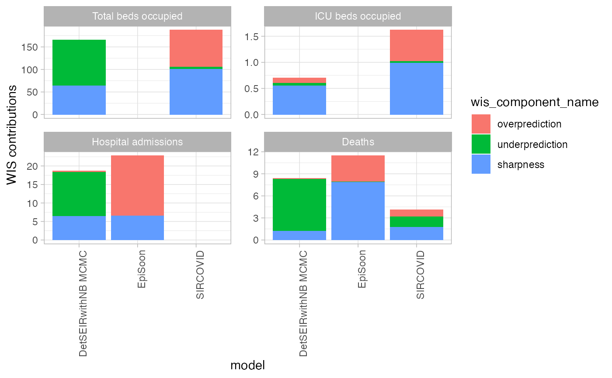
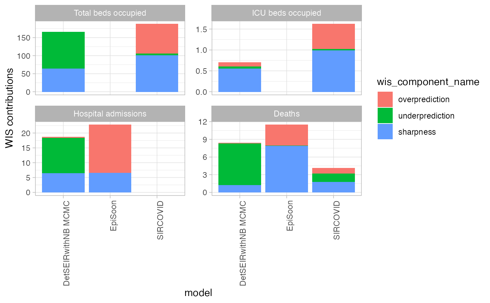

Visualise the components of the weighted interval score: penalties for over-prediction, under-prediction and for a lack of sharpness
wis_components(
scores,
x = "model",
group = NULL,
relative_contributions = FALSE,
facet_formula = NULL,
scales = "free_y",
ncol = NULL,
facet_wrap_or_grid = "facet_wrap",
x_text_angle = 90,
xlab = x,
ylab = "WIS contributions"
)Arguments
| scores | A data.frame of scores based on quantile forecasts as
produced by |
|---|---|
| x | The variable from the scores you want to show on the x-Axis. Usually this will be "model" |
| group | Choose a grouping variable for the plot that gets directly
passed down to ggplot. Default is |
| relative_contributions | show relative contributions instead of absolute contributions. Default is FALSE and this functionality is not available yet. |
| facet_formula | facetting formula passed down to ggplot. Default is
|
| scales | scales argument that gets passed down to ggplot. Only necessary if you make use of facetting. Default is "free_y" |
| ncol | Number of columns for facet wrap. Only relevant if
|
| facet_wrap_or_grid | Use ggplot2's |
| x_text_angle | Angle for the text on the x-axis. Default is 90 |
| xlab | Label for the x-axis. Default is the variable name on the x-axis |
| ylab | Label for the y-axis. Default is "WIS contributions" |
Value
A ggplot2 object showing a contributions from the three components of the weighted interval score
References
Bracher J, Ray E, Gneiting T, Reich, N (2020) Evaluating epidemic forecasts in an interval format. https://arxiv.org/abs/2005.12881
Examples
scores <- scoringutils::eval_forecasts(scoringutils::quantile_example_data,
summarise_by = c("model", "value_desc"))
scoringutils::wis_components(scores, x = "model", facet_formula = ~ value_desc,
relative_contributions = TRUE)
 scoringutils::wis_components(scores, x = "model", facet_formula = ~ value_desc,
relative_contributions = FALSE)

scoringutils::wis_components(scores, x = "model", facet_formula = ~ value_desc,
relative_contributions = FALSE)
